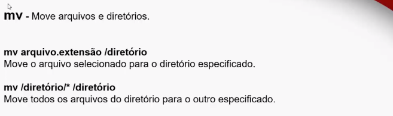
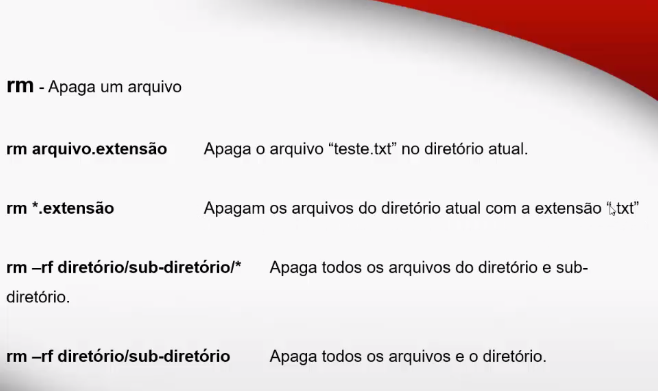
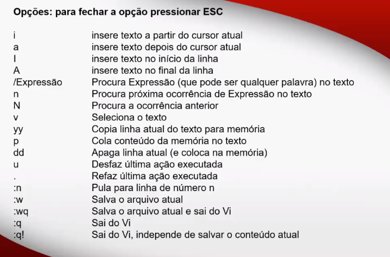

Linux e servidores
sistemas de arquivo
- dispositivo sata
- primeiro drive scsi /dev/sda
- segundo drive scsi /dev/sdb
- terceiro drive scsi /dev/sdc
- quarto drive scsi /dev/sdd
~
se seu dispositivo dor ide ele e reconhecido como hds e sata sda
os sda ou hda podem ser particionados em 4 partes
sata
- sda 1
- sda 2
- sda 3
- sda 4
no caso da ide
- hda 1
- hda 2
- hda 3
- hda 4
pontos de montagem diretorios
tudo começa n diretoria (/) ou diretorio raiz
a principal diferença do windows e que tudo fica n c:/ no linux voce poder colocar tudo em partições diferentes
para o exemplos citados aqui serão feitos no debian.
- se voce usa windows use o soft Virtualbox e baixe a iso do OS
- Debian
- Virtualbox
- crie partiçoes manuais
- /boot
- /
- /home
- /usr obs area de troca swap
comandos em linux
- entenda que o linux e case sensitive difernças entre maiusculo e minusculo
- usuario root e representado pelo #
- root@debian:# su nomeUSuario
- nomeUsuario@debian:/$ o $ siguinifica que ele e um usuario comum
comandos
- ls lista o conteudo por diretorio
- ls -l lista os arquivos por linha
- ls -r inverte a ordem se seleção
- ls -a lista os arquivos ocultos
- ls|more lista pausadamente os arquivos
- ls*.extensão_do_arquivo lista somente de uma extensão
- cd abrir pasta
- cd .. voltar
- cd /
- clear
- pwd mostra o caminho completo do seu diretorio
- mkdir nome_da_pasta cria uma pasta
- rmdir nome_da_pasta apaga uma pasta vazia
- cat nome_do_arquivo visualiza o conteudo em modo texto
- tab para auto complet
comandos pt-2
- cp -serve para realizar copia dos arquivos exemplo cp arquivo.extensao arquivo1.extensao
- cp aqruivo.extensao/diretorio copia o arquivo teste.txt para a pasta /temp por exemplo
- cp */diretorio copia todos os arquivos do diretorio atual para o diretorio especificado
- cp -R/diretorio/* /firetorio copia todos os aqruivos e subdiretorios para a pasta especificada.
- mv move arquivos e tmb para renomear um arquivo
- rm apagar um arquivo


vi editor de texto
- vi nome_do_arquivo
